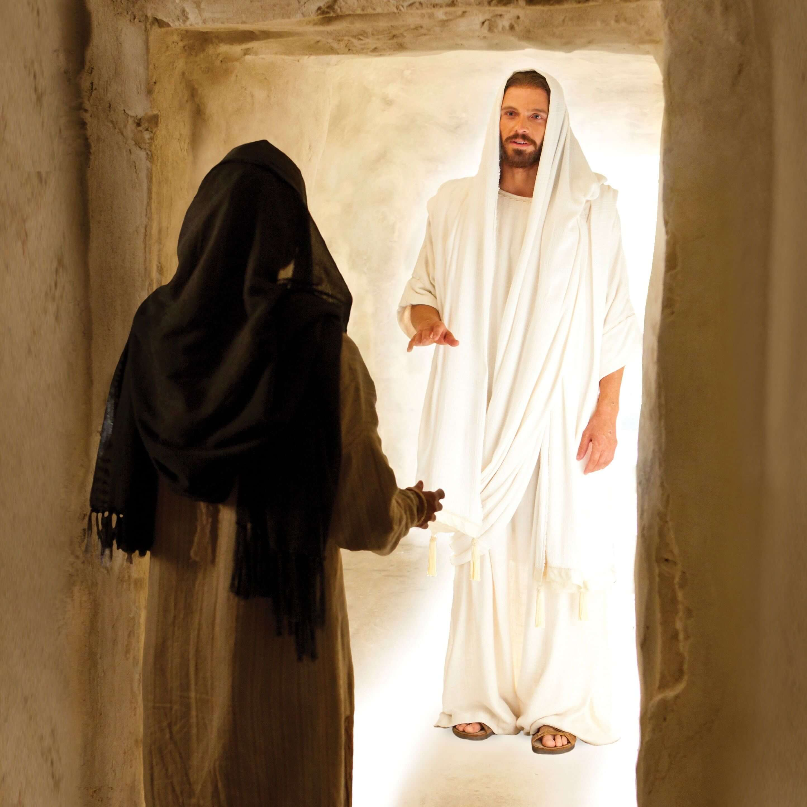

1. Did Jesus really live again?
That's right!
Yes, when the third day came,
He wakened and he left the tomb;
He called Mary's name.
2. Did Jesus come to those he loved?
That's right!
Yes, people touched his feet,
And of the fish and honeycomb
He did truly eat.
And there were nail-prints in his hands
And a spear wound in his side.
3. Did Jesus really live again after he had died?
That's right!
Oh yes! And so shall I!